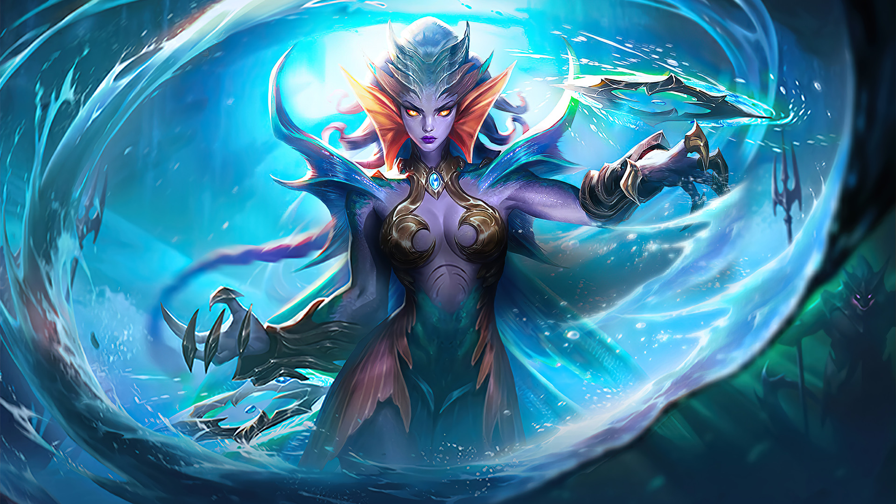
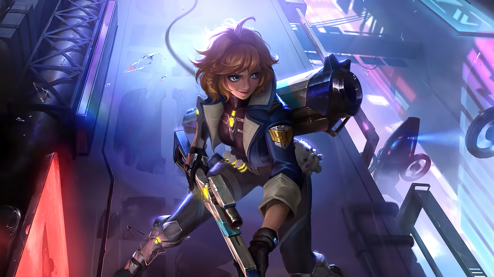
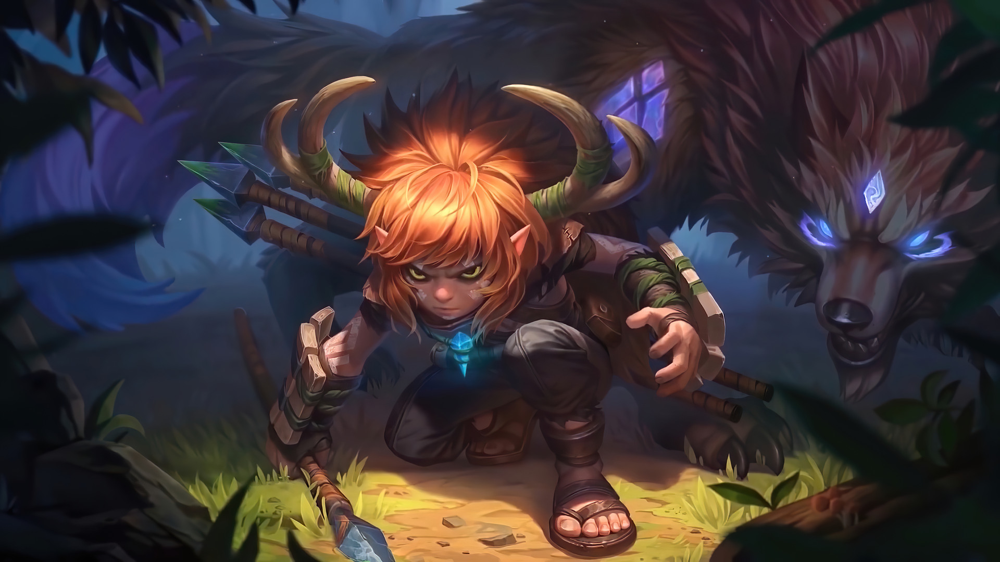
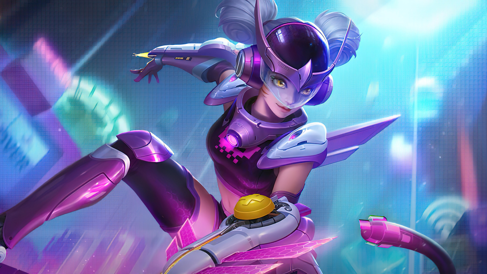

Marksman merupakan salah satu role di Mobile Legends yang bertugas sebagai Damage Dealer dalam tim karena mampu memberikan damage yang sangat besar ketika memasuki Late Game. Namun dari banyaknya hero Marksman yang tersedia, hanya segilintir saja yang mampu mengeluarkan potensi terbaiknya di Patch saat ini.
Dan berikut adalah 4 Hero Marksman terbaik yang telah Kyato.id rangkum untuk anda!
Karrie

Karrie adalah salah satu hero dengan Attack Speed dan Physical Penetration yang sangat tinggi. mengingat tank dan fighter sangat mendominasi pada META saat ini, menggunakan Karrie akan sangat efektif untuk menghabisi hero lawan dengan Deffense yang sangat kuat!
Namun sayangnya, Karrie memiliki mobilitas yang cukup rendah hingga kerap menjadi sasaran empuk bagi tim lawan. Kita dapat mengantisipasi hal ini dengan menggunakan Battel Spell Flicker atau Sprint untuk meningkatkan mobilitasnya.
Beatrix

Beatrix merupakan salah satu Hero paling populer dan menjadi rebutan banyak orang loh! Dengan 4 senjata pilihan dengan mekanisme yang berbeda, Beatrix mampu memberikan damage yang sangat besar bahkan sejak awal permainan.
Salah satu senjata yang paling populer adalah Renner, senjata dengan mekanisme mirip sniper ini memiliki akurasi yang sangat rendah namun dapat memberikan damage besar dan mampu menghabisi lawan hanya dengan beberapa tembakan saja!
Popol & Kupa

Popol & Kupa adalah hero yang memiliki 4 buah skill, memiliki damage tinggi dan dilengkapi Crowd Control membuatnya menjadi salah satu Marksman yang cukup ditakuti.
Selain itu, Popol & Kupa juga mampu mengetahui keberadaan lawan dengan menyimpan trap yang dapat diletakan dimana saja. Selain memiliki damage yang tinggi, Popol & Kupa juga mampu mendapatlan Shield yang cukup membantu selama petempuran.
Wanwan

"You can try to catch me!" adalah sebuah kalimat yang selalu diucapkan oleh Wanwan dan benar saja, Wanwan adalah salah satu Hero dengan mobilitas yang sangat tinggi hingga sangat sulit untuk ditangkap.
Wanwan juga akan semakin ganas jika dikombinasikan dengan Inspire yang membuatnya memiliki Attack Speed yang sangat tinggi. Namun sayangnya, Wanwan memiliki darah yang terbilang sedikit yang membuatnya dapat dengan mudah terbunuh jika telah tertangkap oleh lawan!
Nah itulah 4 Hero Marksman terbaik yang Kyato.id telah rangkum untuk anda. Menurut teman-teman siapa sih Marksman terbaik?